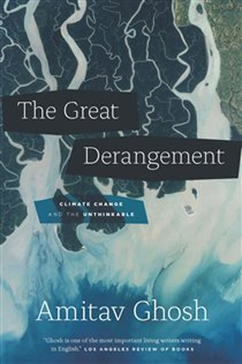

The Great Derangement Climate Change and the Unthinkable
Why contemporary culture struggles to confront ecological reality.
READ FULL BREAKDOWN (FREE) →The Big Idea
Modern literature and politics suffer from a collective failure of imagination in confronting environmental instability.
Key Lessons
The Illusion of Regularity
Modern bourgeois life assumes weather will remain predictable, treating extreme events as freak anomalies.
The Failure of Literary Imagination
Contemporary novels focus obsessively on individual personal dramas while nature reshapes entire continents.
Colonial Geography
Colonial powers built major trade ports on exposed sea coasts, reversing ancient Indian inland wisdom.
The Carbon Economy as Power
Fossil fuels triumphed not just because of energy density, but because coal allowed factory owners to control labor.
Collective Action vs Individual Consumerism
Buying bamboo toothbrushes will not stop ocean acidification; political coordination and treaty enforcement will.
The Return of Non-Human Agency
Nature is actively asserting its dominance over human hubris and concrete seawalls.
The Graveyard Proves It
Where this advice breaks: Where this advice breaks: dwelling on apocalyptic paralysis without practical engineering fixes yields despair.
Read the autopsy: kodak-digital →